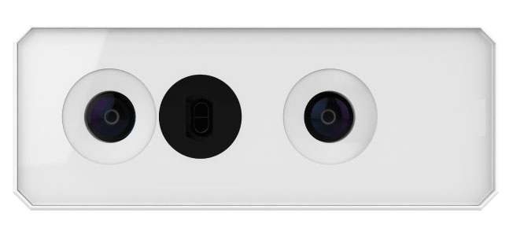

Hardware
The right sensor for every place.
Place Performance is technology-agnostic. No single sensor is best everywhere, so we choose the right one for each site: indoor or outdoor, a single doorway or an open crowd, a permanent install or a one-off event. Whatever we use, the counts are accurate and anonymous, and we design, supply, install and support it all.

3D LiDAR & depth
Light that measures distance.
A 3D depth sensor sits above the space and sends out rapid pulses of infrared light. By timing how long each pulse takes to bounce back, it measures the exact distance to every point below it and builds a live 3D map of the scene. Looking straight down, it reads the height and shape of each person passing through, and on-device software tracks them across a count line or within a zone. Because it measures distance, not colour or features, there is nothing to identify, and it performs the same in bright sun or total darkness.
What it is good at
- Pinpoint entrance accuracy, up to 99.8%
- Separates people standing close together
- Ignores trolleys, bags and strollers by shape
- Counts direction and live occupancy at once
Where it is less suited
- Needs an overhead mount at a set height
- Each unit covers a doorway or defined zone
- Best indoors or under cover
Key specs
- Time-of-flight infrared depth
- Works in any light, captures no images
- Single network cable (PoE)
- Line, zone and occupancy counting
Radar (mmWave)
Radio that reads movement.
A millimetre-wave radar sends out high-frequency radio signals and listens for the echoes. From each echo it works out an object's distance and angle, giving a 3D position, and from the shift in frequency it reads the object's speed and direction, the same principle as a speed camera. It tracks many objects at once and sorts them into pedestrians, cyclists and vehicles by how fast they move, and adults from children by height. Radio is unaffected by light or weather and passes straight through a sealed housing, so the sensor has no exposed lens and keeps working in rain, fog, snow, glare or complete darkness.
What it is good at
- Outdoors and in any weather
- People, cyclists and vehicles on one sensor
- Range to about 10 m for people, 20 m for vehicles
- Reads speed, direction and classification
Where it is less suited
- Lower detail than depth imaging
- Very dense, slow crowds are harder
- Classification by speed has edge cases
Key specs
- 60 GHz mmWave, tracks position and speed
- IP65 to IP68, -25 to +65°C
- PoE, or battery and solar with 4G
- Over 99% accuracy, captures no images
Specialist sensors
The right tool for a specific job.
For a particular site or metric, we add a specialist sensor, each with its own strengths.
Thermal
Reads the heat people naturally give off, so it detects presence in complete darkness and tells people from their surroundings without any image. Useful for low-light and privacy-sensitive outdoor spots.
Stereo vision
Two lenses judge depth from the small difference between their views, the way our eyes do, counting people by 3D shape on the device. A passive alternative to LiDAR for some indoor sites.
Break-beam
A simple infrared beam across a doorway counts each time it is interrupted. Low cost and easy to fit, with lower accuracy, for basic single-door counting.
Side by side
How the main technologies compare.
| 3D LiDAR / depth | Radar (mmWave) | |
|---|---|---|
| Where it works | Indoor entrances and zones, sheltered | Indoor or outdoor, all weather |
| What it detects | People, by shape and height | People, cyclists and vehicles, by movement and speed |
| Typical range | The doorway or zone below the sensor | About 10 m for people, up to 20 m for vehicles |
| Light and weather | Any light | Any light, plus rain, fog, snow and full darkness |
| Mounting | Overhead | Overhead, wall or pole |
| Power | Single network cable (PoE) | PoE, or battery and solar |
| Connectivity | Wired network | Wired, Wi-Fi or 4G |
| Accuracy | Up to 99.8% | Over 99% |
| Privacy | 3D depth only, no images | Radar signatures only, no images |
What every sensor measures
Counts you can act on, processed on site.
Lines and zones
Draw a count line across a doorway or a zone over an area. The sensor reports people crossing in and out, and how many are inside at any moment.
Direction and dwell
Every count carries a direction, in or out, and zones measure how long people stay, so you see flow and dwell time, not just totals.
Classification
Radar tells pedestrians, cyclists and vehicles apart by speed, and adults from children by height, so mixed paths and roads are counted correctly.
How we choose
The best technology for your requirement.
Indoor or outdoor
Sheltered entrances suit overhead 3D sensors; open, exposed sites use weatherproof radar rated for sun, rain, cold and full darkness.
What you are counting
People through a door, or pedestrians, cyclists and vehicles on a path or road, each needs a different sensor and mounting.
Permanent or temporary
Fixed sites run on a single network cable; remote or pop-up sites run on battery and solar with 4G, so we can measure a trail, a roadside or a single event without mains power.
In practice
Matched to the kind of place.
Building entrance
Overhead 3D LiDAR counts people in and out at the door, accurate even in crowds.
Open plaza or crowd
Wide-area radar or LiDAR covers a whole space and counts the crowd from a single mount.
Shared paths and trails
Radar separates walkers from cyclists and records direction, day or night.
Roads and car parks
Radar counts vehicles and reads speed alongside pedestrians and cyclists.
Remote or pop-up sites
Battery and solar radar with 4G measures a trail, a roadside or a single event with no mains power or wired network.
A mixed portfolio
Different sensors across your sites, all feeding one platform and one set of reports.
Always anonymous
Measure the place, not the person.
Whatever the technology, our sensors capture depth or radar signatures, never images or identities. Counting happens on the device and only anonymous numbers leave the site, so privacy is built in by design.
One partner
Specified, installed and supported by us.
We assess each site, specify the right mix of technologies, then supply, install, commission and support every sensor as one service. You deal with one Australian partner, whatever is on your sites.
See your places in a new light.
Book a 30-minute walkthrough and we'll scope a pilot for one of your sites: sensors, installation, software and insights in one agreement.